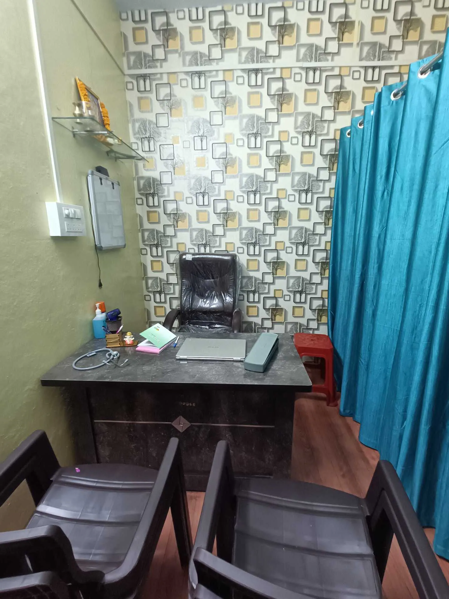
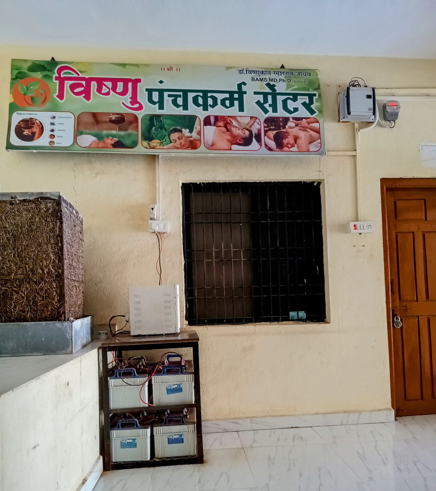
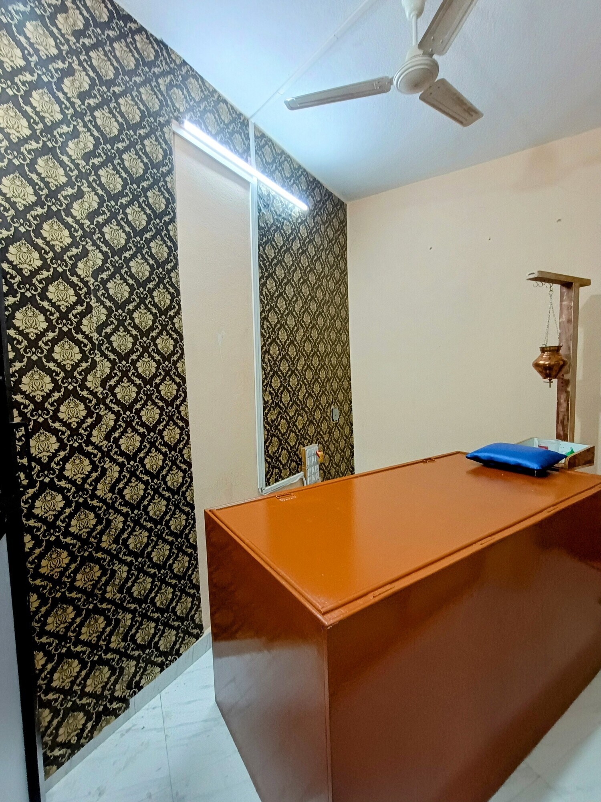
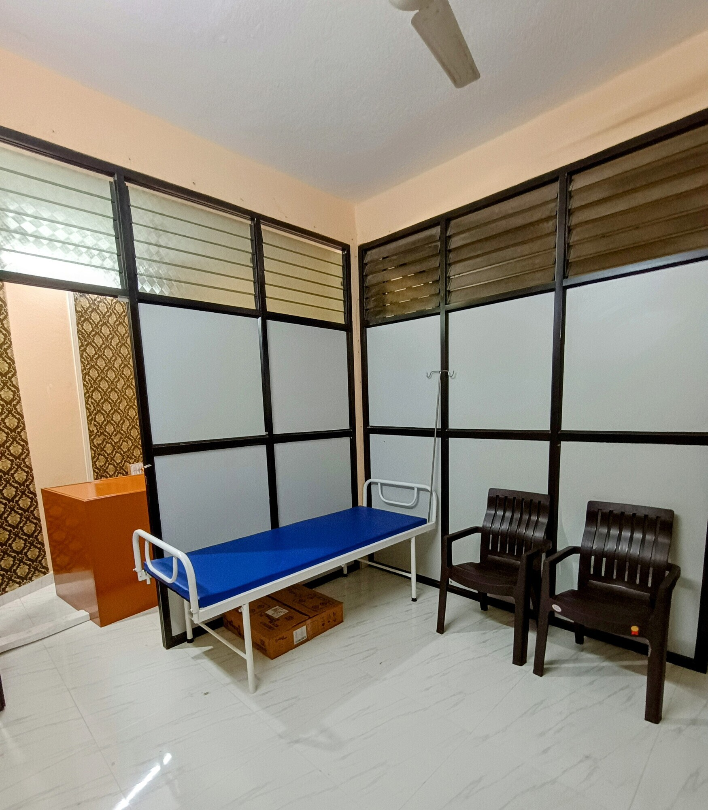

Joint & Musculoskeletal Care
Joint pain, stiffness and musculoskeletal complaints.

Ayurvedic consultation, Nadi Pariksha, Panchakarma and individualised diet-lifestyle guidance with Dr. Vishnukant R. Jadhav.

BAMS, MD (Ayurved), Ph.D. Scholar
Registration No. I-87907-A
Consultation includes detailed history, clinical examination, Ayurvedic assessment, Nadi Pariksha where appropriate, and an individual plan of medicines, Panchakarma, diet and lifestyle guidance.
Clinical evaluation comes first. Treatment is personalised to the patient.
Joint pain, stiffness and musculoskeletal complaints.
Back pain, neck pain and related complaints.
Individualised care after clinical evaluation.
Diet, lifestyle and Ayurvedic support.
Menstrual health, preconception and Garbhasanskar guidance.
Confidential male and female fertility consultation.
Ayurvedic assessment and selected therapies.
Digestive, respiratory, liver and lifestyle-related concerns.
वमन
विरेचन
बस्ती
नस्य
रक्तमोक्षण
मुख्य शाखा — डॉल्फिन पुतळा
क्रांतीनगर शाखा — निडेबन रोड



